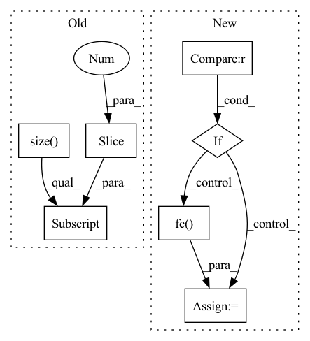

Pattern ID :1334
Before Change
def forward(self, x):
x = self.featuremaps(x)
x = F.avg_pool2d(x, x.size()[2:] ).view(x.size(0), -1)
x = F.dropout(x, training=self.training)
if not self.training:After Change
v = self.global_avgpool(f)
v = v.view(v.size(0), -1)
if self.fc is not None :
v = self.fc( v)
if not self.training:
return v
In pattern: SUPERPATTERN
Frequency: 3
Non-data size: 7
Instances Fragment ID: 4637046
Project Name: vlsomers/bpbreid
Commit Name: 7ff331f871b563d1dbb36472de28d1a692d8b4af
Time: 2019-03-05
Author: k.zhou@qmul.ac.uk
File Name: torchreid/models/mobilenetv2.py
M Class Name: MobileNetV2
N Class Name: MobileNetV2
M Method Name: forward(2)
N Method Name: forward(2)
M Parent Class: nn.Module
N Parent Class: nn.Module
M File Name: torchreid/models/mobilenetv2.py
N File Name: torchreid/models/mobilenetv2.py
M Start Line: 114
M End Line: 126
N Start Line: 166
N End Line: 181
Before Change
def forward(self, x):
x = self.base(x)
x = F.avg_pool2d(x, x.size()[2:] )
f = x.view(x.size(0), -1)
if not self.training:
return fAfter Change
v = self.global_avgpool(f)
v = v.view(v.size(0), -1)
if self.fc is not None :
v = self.fc( v)
if not self.training:
return v
Fragment ID: 4637044
Project Name: vlsomers/bpbreid
Commit Name: 710b9ac1a28d418bddc41aeeda320ab4de4d17fe
Time: 2018-10-26
Author: k.zhou@qmul.ac.uk
File Name: torchreid/models/resnet.py
M Class Name: ResNet101
N Class Name: ResNet
M Method Name: forward(2)
N Method Name: forward(2)
M Parent Class: nn.Module
N Parent Class: nn.Module
M File Name: torchreid/models/resnet.py
N File Name: torchreid/models/resnet.py
M Start Line: 48
M End Line: 58
N Start Line: 203
N End Line: 218
Before Change
def forward(self, x):
x = self.base(x)
x = F.avg_pool2d(x, x.size()[2:] )
f = x.view(x.size(0), -1)
if not self.training:
return fAfter Change
v = self.global_avgpool(f)
v = v.view(v.size(0), -1)
if self.fc is not None :
v = self.fc( v)
if not self.training:
return v
Fragment ID: 4637049
Project Name: vlsomers/bpbreid
Commit Name: 35235fe4bbe183e6613884e4dbf445e009ef6f31
Time: 2018-10-27
Author: k.zhou@qmul.ac.uk
File Name: torchreid/models/densenet.py
M Class Name: DenseNet121
N Class Name: DenseNet
M Method Name: forward(2)
N Method Name: forward(2)
M Parent Class: nn.Module
N Parent Class: nn.Module
M File Name: torchreid/models/densenet.py
N File Name: torchreid/models/densenet.py
M Start Line: 23
M End Line: 33
N Start Line: 143
N End Line: 159